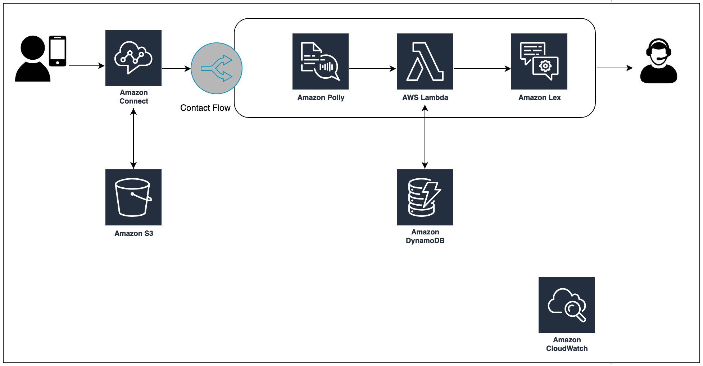

0. 목적
ML 기반 콜센터를 빠르게 구축해봅니다.
이 실습 시리즈에서는 Amazon Connect 및 관련 서비스에 대해 알아봅니다. 별도의 하드웨어 인프라를 주문/설치하지 않고 바로 ML 기반 콜센터를 구축할 수 있습니다.
워크샵 대상
이 워크샵은 아마존 커넥트에 대한 소개입니다. 기존 AWS나 아마존 커넥트에 대한 지식이 없는 사용자를 대상으로 하고 있습니다.
아키텍처
- Amazon Connect 인스턴스를 실제로 구축해봅니다. 원하는 지역에 단 몇분만에 쉽게 인프라를 구축할 수 있습니다.
- 간단한 IVR 시나리오를 구성해봅니다. 업무 시간 확인 및 콜센터 관련 설정 등을 해봅니다. Conatct Flow 기능은 IVR 시나리오를 간편하게 Drag and drop 방식으로 구축할 수 있게 도와줍니다.
- Lambda 와 Dynamo DB를 이용해서 고객 정보 DB에 데이터를 저장하는 방법과 가져와서 고객을 인증하는 방법을 학습합니다.
- Polly 를 이용해서 동적인 안내 멘트를 만드는 방법을 학습합니다.
- Amazon Lex 를 이용해서 Voicebot 을 만들어봅니다. ML 기반 챗봇 솔루션인 Amazon Lex는 코딩없이도 간단한 챗봇 시나리오를 빠르게 구축할 수 있으며 Connect 와 연동이 쉽습니다.
아래와 같은 아키텍처를 구성합니다.
